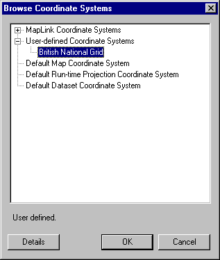
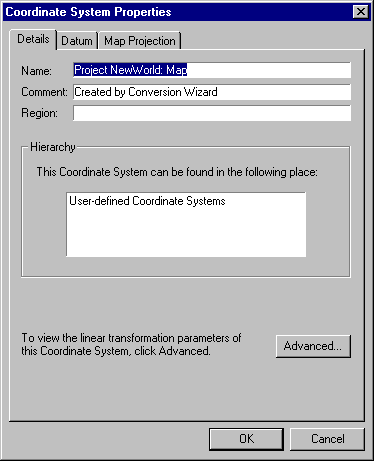

Selecting a pre-defined Coordinate System
To select an existing coordinate system and apply it to the map as a whole or to an individual dataset, do the following:
- If you have not already done so, select either Map | Output Coordinate System, or Dataset | Input Coordinate System as appropriate.
- Click Select...

There are four kinds of coordinate systems stored in MapLink Pro Studio from which you can choose:
- MapLink Pro Studio Coordinate Systems - these are pre-defined and not editable
- User-defined Coordinate Systems - these are created by the user and are fully editable
- The two MapLink Pro Studio editable coordinate systems:
- The Default Map Coordinate System
- The Default Dataset Coordinate System
These are partly editable. Projection, datum and linear transformation details for these can be altered, but the name, comment and region information cannot. These have been set up for ease of use during trial and experimentation, as an alternative to using the Coordinate System Wizard. .
- The Default Runtime Projection Coordinate System – Only the datum information is editable
- If you wish to view the details of a coordinate system before applying it:
- Select a system and click Details. This takes you to the Coordinate System Properties section, which has three pages: Details, Datum and Projection.

- To view the Linear Transform information for the system, click the Advanced button. Click OK or Cancel to return to the Coordinate System Properties section.
- Click OK or Cancel to return to the Browser.
- When you have decided on a Coordinate System for the map or dataset, select it and click OK. This will return you to the Map or Dataset Properties section
- To return to the main menu, click OK
- If 'automatic data loading' has been disabled, you will need to reload the layer before viewing the map with the new coordinate system information applied.